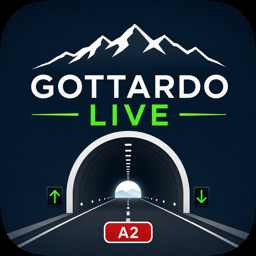

Gottardo Live
Support · Real-time traffic, queues, official alerts and webcams for the Gotthard road tunnel.
Supporto · Traffico in tempo reale, code, avvisi ufficiali e webcam per il tunnel del San Gottardo.
Support · Echtzeit-Verkehr, Staus, offizielle Meldungen und Webcams für den Gotthard-Strassentunnel.
Assistance · Trafic en temps réel, files, alertes officielles et webcams pour le tunnel routier du Gothard.
Support · Realtime verkeer, files, officiële meldingen en webcams voor de Gotthard-wegtunnel.
Contact
Questions, problems or suggestions? Write to us: we usually reply within a couple of days.
Email supportFrequently asked questions
The app shows “Clear” and 0 minutes: is it broken?
No: it means there is currently no queue at the tunnel. Queues at the Gotthard typically build on weekends, holidays and summer travel days. The 24-hour chart shows how the day evolved.
Why are the official alerts in Italian, German or French?
The alerts are published by the Swiss traffic management centre (VMZ-CH) in the three national languages only: an English version does not exist at the source. The app picks the language that best matches your device; the interface itself is fully localised in English, Italian, German, French and Dutch.
A webcam shows “out of service”
That placeholder image comes from the road authority (FEDRO/AFBN) when a camera is temporarily down. It usually returns within a few days; nothing needs fixing on your side.
How are waiting times calculated?
When the authorities publish an official waiting time, we show that. When they publish only the queue length, we estimate roughly 10 minutes per kilometre (the typical Gotthard metering rate). When there is no official queue, Apple Maps may show a discreet “heavier traffic than usual” hint: this is only an indication, not a queue, and has no kilometres.
Can I control the ads I see?
Yes. In the EEA, the UK and Switzerland the app asks for your consent before any ad is requested, and iOS asks separately whether the app may track you. If you decline either, the app works exactly the same: the ads are simply not personalised. Change your consent in Settings → “Privacy options”, and tracking in iOS Settings → Privacy & Security → Tracking.
I don't receive notifications
Check iOS Settings → Notifications → Gottardo Live and make sure notifications are allowed. Notifications are optional and used only for significant traffic updates.
Can I choose when to get “queue almost over”?
Yes: in Settings, under Notifications, set “Queue almost over” to 10, 20 or 30 minutes. The alert arrives when the waiting time drops to that value, once per queue, and only for queues you were alerted about. If you don't choose, it stays at 20 minutes.
Can I see the intro tour again?
Yes: in the app open Settings (gear icon) → About → “Replay the tour”.
How do I add the widget?
Touch and hold an empty area of the Home Screen, tap Edit, then Add Widget, and search for Gottardo Live. The small widget and the Lock Screen widgets are free and show the queue and waiting time northbound and southbound. The medium widget is part of Premium. Widgets refresh about every 15 minutes and show the time of the data: if it is more than 15 minutes old, they say so.
What is the calendar of critical days?
It is a tab in the app, included in Premium, that marks for each day and direction when school holidays, public holidays and long weekends usually bring traffic to the Gotthard, with the reason: for example the start of the holidays in a German or Dutch region. The dates come from the official school calendars of Germany, Switzerland and the Netherlands. It is an indication, not a forecast: queues can also form on other days, or not form on the marked ones. If you like, the app reminds you at 6 pm the evening before.
What does Premium include?
Premium removes the ads and adds three things: Gottardo Live on CarPlay, with queues, waiting times and closures on your car's screen; the medium widget, with north and south side by side, the last 3 hours and tunnel closures; the calendar of critical days. Notifications and the small widgets stay free for everyone. You can choose the 7-day Pass, which renews every week until you cancel it, or Premium forever, with a single payment.
I already removed the ads: can I upgrade to Premium?
Yes. If you removed them for ever, upgrading to Premium for ever costs less: you find it in Settings → Purchases. If you have the monthly ad-free subscription and choose Premium, Apple refunds the unused days pro rata.
I changed phone and the ads are back or Premium is not active
The app has no user account, so a purchase follows your Apple Account, not the device. Open Settings → Purchases → “Restore purchases” while signed in with the same Apple Account you bought it with, and the ads go away again and Premium is active again. It costs nothing.
How do I cancel a subscription?
This applies to the 7-day Pass and the monthly subscription. In the app: Settings → Purchases → “Manage subscription”. Or in iOS Settings → tap your name → Subscriptions. Cancel at least 24 hours before the period ends, otherwise it renews once more. The one-off “for ever” purchase has nothing to cancel: it never renews.
Advertising
The app is free and supported by a single banner ad from Google AdMob, placed between the two direction cards. All traffic information is available to everyone: queues, waiting times, alerts, webcams, notifications and the small widgets. Premium adds CarPlay, the medium widget and the calendar of critical days.
If you would rather not see the banner, you can remove it: a monthly subscription (auto-renewing, CHF 1.00 / €0.99 / £0.99) or a single payment that lasts for ever (CHF 10.00 / €9.99 / £9.99). Both do exactly the same thing: they hide the advert. In the app: Settings → Purchases.
Before any ad is requested, the app asks for your consent (EEA, UK and Switzerland) and for tracking permission through Apple's App Tracking Transparency prompt. Declining either changes nothing except that the ads you see are not personalised.
See our Privacy Policy.
Data sources
- Traffic data and alerts: Swiss Federal Roads Office (FEDRO / VMZ-CH) via opentransportdata.swiss
- Travel times: Apple Maps · Weather: Apple Weather / Open-Meteo
- Webcams: FEDRO / AFBN
- Calendar of critical days: official school calendars of Germany, Switzerland and the Netherlands
- Advertising: Google AdMob (free version)
Queue information is provided by the authorities and may occasionally differ from actual conditions. Please never use the app while driving.
Contatti
Domande, problemi o suggerimenti? Scrivici: di solito rispondiamo entro un paio di giorni.
Scrivici via emailDomande frequenti
L'app mostra “Clear” e 0 minuti: è rotta?
No: significa che al momento non c'è coda al tunnel. Le code al Gottardo si formano tipicamente nei weekend, nei giorni festivi e nei periodi di traffico estivo. Il grafico delle 24 ore mostra com'è andata la giornata.
Perché gli avvisi ufficiali sono in italiano, tedesco o francese?
Gli avvisi sono pubblicati dalla centrale svizzera del traffico (VMZ-CH) solo nelle tre lingue nazionali: una versione inglese non esiste alla fonte. L'app sceglie la lingua più vicina alle impostazioni del dispositivo; l'interfaccia è comunque completamente localizzata in inglese, italiano, tedesco, francese e olandese.
Una webcam mostra “fuori servizio”
Quell'immagine segnaposto arriva dall'ente stradale (USTRA/AFBN) quando una telecamera è temporaneamente fuori uso. Di solito torna nel giro di qualche giorno; non c'è nulla da sistemare da parte tua.
Come vengono calcolati i tempi d'attesa?
Quando le autorità pubblicano un tempo d'attesa ufficiale, mostriamo quello. Quando pubblicano solo la lunghezza della coda, stimiamo circa 10 minuti al chilometro (il ritmo tipico del dosaggio del Gottardo). Quando non c'è coda ufficiale, Apple Maps può mostrare un discreto indizio “traffico più lento del solito”: è solo un'indicazione, non una coda: non ha chilometri.
Posso decidere quali pubblicità vedo?
Sì. Nel SEE, nel Regno Unito e in Svizzera l'app chiede il tuo consenso prima di qualsiasi richiesta di annuncio; iOS ti chiede a parte se l'app può tracciarti. Se rifiuti, l'app funziona esattamente allo stesso modo: gli annunci semplicemente non sono personalizzati. Puoi cambiare il consenso in Impostazioni → “Opzioni privacy” e il tracciamento in Impostazioni iOS → Privacy e sicurezza → Tracciamento.
Non ricevo le notifiche
Controlla in Impostazioni iOS → Notifiche → Gottardo Live che le notifiche siano consentite. Le notifiche sono facoltative e usate solo per aggiornamenti importanti sul traffico.
Posso scegliere quando ricevere «la coda sta per finire»?
Sì: in Impostazioni, sezione Notifiche, alla voce «Coda sta per finire» scegli 10, 20 o 30 minuti. L'avviso arriva quando l'attesa scende a quel valore, una volta per coda, e solo per le code di cui hai ricevuto l'avviso. Se non scegli nulla, resta a 20 minuti.
Posso rivedere il tour iniziale?
Sì: nell'app apri Impostazioni (icona ingranaggio) → Info → “Rivedi il tour”.
Come aggiungo il widget?
Tieni premuto su uno spazio vuoto della schermata Home, tocca Modifica, poi Aggiungi widget, e cerca Gottardo Live. Il widget piccolo e quelli della schermata di blocco sono gratuiti e mostrano coda e attesa verso nord e verso sud. Il widget medio fa parte di Premium. I widget si aggiornano circa ogni 15 minuti e mostrano l'ora del dato: se ha più di 15 minuti, lo dicono.
Che cos'è il calendario dei giorni critici?
È una scheda dell'app, inclusa in Premium, che segna per ogni giorno e direzione quando ferie scolastiche, festività e ponti portano di solito traffico al Gottardo, con il motivo: per esempio l'inizio delle vacanze in una regione tedesca o olandese. Le date vengono dai calendari scolastici ufficiali di Germania, Svizzera e Paesi Bassi. È un'indicazione, non una previsione: la coda può formarsi anche in altri giorni, o non formarsi in quelli segnati. Se vuoi, l'app ti avvisa alle 18 della sera prima.
Che cosa comprende Premium?
Premium toglie la pubblicità e aggiunge tre cose: Gottardo Live su CarPlay, con code, tempi d'attesa e chiusure sullo schermo dell'auto; il widget medio, con nord e sud affiancati, l'andamento delle ultime 3 ore e le chiusure del tunnel; il calendario dei giorni critici. Le notifiche e i widget piccoli restano gratuiti per tutti. Puoi scegliere il Pass 7 giorni, che si rinnova ogni settimana finché non lo disdici, oppure Premium per sempre, con un solo pagamento.
Ho già tolto la pubblicità: posso passare a Premium?
Sì. Se l'hai tolta per sempre, il passaggio a Premium per sempre costa meno: lo trovi in Impostazioni → Acquisti. Se hai l'abbonamento mensile senza pubblicità e scegli Premium, Apple ti rimborsa in proporzione i giorni non usati.
Ho cambiato telefono e la pubblicità è tornata o Premium non è attivo
L'app non ha account utente, quindi l'acquisto segue il tuo account Apple, non il dispositivo. Apri Impostazioni → Acquisti → “Ripristina gli acquisti” con lo stesso account Apple usato per comprare: la pubblicità sparisce di nuovo e Premium torna attivo. Non costa nulla.
Come disdico un abbonamento?
Vale per il Pass 7 giorni e per l'abbonamento mensile. Nell'app: Impostazioni → Acquisti → “Gestisci abbonamento”. Oppure in Impostazioni di iOS → tocca il tuo nome → Abbonamenti. Disdici almeno 24 ore prima della fine del periodo, altrimenti si rinnova un'altra volta. L'acquisto “per sempre” non ha nulla da disdire: non si rinnova mai.
Pubblicità
L'app è gratuita ed è sostenuta da un solo banner di Google AdMob, collocato tra le due schede direzione. Tutte le informazioni sul traffico sono disponibili per tutti: code, tempi d'attesa, avvisi, webcam, notifiche e widget piccoli. Premium aggiunge CarPlay, il widget medio e il calendario dei giorni critici.
Se preferisci non vedere il banner, puoi toglierlo: un abbonamento mensile (con rinnovo automatico, CHF 1.00 / 0,99 €) oppure un pagamento unico che vale per sempre (CHF 10.00 / 9,99 €). Fanno esattamente la stessa cosa: nascondono la pubblicità. Nell'app: Impostazioni → Acquisti.
Prima di qualsiasi richiesta di annuncio l'app chiede il tuo consenso (SEE, Regno Unito e Svizzera) e il permesso di tracciamento tramite il dialogo App Tracking Transparency di Apple. Rifiutare non cambia nulla, se non che gli annunci che vedi non sono personalizzati.
Consulta la nostra Informativa sulla privacy.
Fonti dei dati
- Dati e avvisi sul traffico: Ufficio federale delle strade (USTRA / VMZ-CH) tramite opentransportdata.swiss
- Tempi di percorrenza: Apple Maps · Meteo: Apple Weather / Open-Meteo
- Webcam: USTRA / AFBN
- Calendario dei giorni critici: calendari scolastici ufficiali di Germania, Svizzera e Paesi Bassi
- Pubblicità: Google AdMob (versione gratuita)
Le informazioni sulle code sono fornite dalle autorità e possono a volte differire dalle condizioni reali. Non usare mai l'app mentre guidi.
Kontakt
Fragen, Probleme oder Vorschläge? Schreibe uns: Wir antworten meist innerhalb weniger Tage.
Per E-Mail schreibenHäufige Fragen
Die App zeigt „Clear“ und 0 Minuten: Ist sie kaputt?
Nein: Es bedeutet, dass gerade kein Stau am Tunnel ist. Staus am Gotthard bilden sich typischerweise an Wochenenden, Feiertagen und in der Sommerreisezeit. Das 24-Stunden-Diagramm zeigt den Tagesverlauf.
Warum sind die offiziellen Meldungen auf Italienisch, Deutsch oder Französisch?
Die Meldungen werden von der Schweizer Verkehrsmanagementzentrale (VMZ-CH) nur in den drei Landessprachen veröffentlicht: Eine englische Version gibt es an der Quelle nicht. Die App wählt die Sprache, die am besten zu deinen Geräteeinstellungen passt; die Oberfläche selbst ist vollständig auf Englisch, Italienisch, Deutsch, Französisch und Niederländisch lokalisiert.
Eine Webcam zeigt „ausser Betrieb“
Dieses Platzhalterbild stammt von der Strassenbehörde (ASTRA/AFBN), wenn eine Kamera vorübergehend ausfällt. Sie ist meist nach wenigen Tagen wieder da; auf deiner Seite ist nichts zu tun.
Wie werden die Wartezeiten berechnet?
Wenn die Behörden eine offizielle Wartezeit veröffentlichen, zeigen wir diese. Veröffentlichen sie nur die Staulänge, schätzen wir rund 10 Minuten pro Kilometer (die typische Dosierrate am Gotthard). Ohne offiziellen Stau kann Apple Karten einen dezenten Hinweis „mehr Verkehr als üblich“ anzeigen: Das ist nur ein Hinweis, kein Stau, und hat keine Kilometerangabe.
Kann ich beeinflussen, welche Werbung ich sehe?
Ja. Im EWR, im Vereinigten Königreich und in der Schweiz fragt die App vor jeder Anzeigenanforderung nach deiner Einwilligung, und iOS fragt separat, ob die App dich tracken darf. Lehnst du ab, funktioniert die App genau gleich – die Anzeigen sind dann einfach nicht personalisiert. Die Einwilligung änderst du unter Einstellungen → „Datenschutzoptionen“, das Tracking in den iOS-Einstellungen → Datenschutz & Sicherheit → Tracking.
Ich erhalte keine Benachrichtigungen
Prüfe in den iOS-Einstellungen → Mitteilungen → Gottardo Live, ob Mitteilungen erlaubt sind. Benachrichtigungen sind optional und werden nur für wichtige Verkehrsupdates verwendet.
Kann ich wählen, wann «Stau bald vorbei» kommt?
Ja: In den Einstellungen, Bereich Mitteilungen, wählst du bei «Stau bald vorbei» 10, 20 oder 30 Minuten. Die Mitteilung kommt, wenn die Wartezeit auf diesen Wert sinkt, einmal pro Stau und nur für Staus, über die du benachrichtigt wurdest. Wählst du nichts, bleibt es bei 20 Minuten.
Kann ich die Einführungstour erneut ansehen?
Ja: Öffne in der App die Einstellungen (Zahnrad) → Info → „Tour erneut ansehen“.
Wie füge ich das Widget hinzu?
Halte eine leere Stelle des Home-Bildschirms gedrückt, tippe auf Bearbeiten, dann auf Widget hinzufügen, und suche nach Gottardo Live. Das kleine Widget und die Widgets für den Sperrbildschirm sind kostenlos und zeigen Stau und Wartezeit Richtung Norden und Süden. Das mittlere Widget gehört zu Premium. Die Widgets aktualisieren sich etwa alle 15 Minuten und zeigen die Uhrzeit der Daten: Sind sie älter als 15 Minuten, sagen sie es.
Was ist der Kalender der kritischen Tage?
Ein Bereich der App, in Premium enthalten, der für jeden Tag und jede Richtung zeigt, wann Schulferien, Feiertage und lange Wochenenden meist Verkehr an den Gotthard bringen, mit dem Grund: zum Beispiel den Ferienbeginn in einem deutschen oder niederländischen Bundesland. Die Daten stammen aus den offiziellen Schulferienkalendern von Deutschland, der Schweiz und den Niederlanden. Ein Hinweis, keine Prognose: Stau kann auch an anderen Tagen entstehen oder an den markierten ausbleiben. Auf Wunsch erinnert dich die App am Vorabend um 18 Uhr.
Was umfasst Premium?
Premium entfernt die Werbung und fügt drei Dinge hinzu: Gottardo Live auf CarPlay, mit Stau, Wartezeiten und Sperrungen auf dem Bildschirm deines Autos; das mittlere Widget, mit Nord und Süd nebeneinander, den letzten 3 Stunden und den Tunnelsperrungen; den Kalender der kritischen Tage. Die Benachrichtigungen und die kleinen Widgets bleiben für alle kostenlos. Du kannst den Pass 7 Tage wählen, der sich jede Woche verlängert, bis du ihn kündigst, oder Premium für immer, mit einer einmaligen Zahlung.
Ich habe die Werbung schon entfernt: Kann ich zu Premium wechseln?
Ja. Wenn du sie für immer entfernt hast, kostet der Wechsel zu Premium für immer weniger: Du findest ihn unter Einstellungen → Käufe. Wenn du das werbefreie Monatsabo hast und Premium wählst, erstattet Apple die nicht genutzten Tage anteilig.
Ich habe das Telefon gewechselt und die Werbung ist zurück oder Premium ist nicht aktiv
Die App hat kein Benutzerkonto, der Kauf hängt also an deinem Apple-Account, nicht am Gerät. Öffne Einstellungen → Käufe → „Käufe wiederherstellen“, angemeldet mit demselben Apple-Account, mit dem du gekauft hast, dann ist die Werbung wieder weg und Premium wieder aktiv. Das kostet nichts.
Wie kündige ich ein Abo?
Das gilt für den Pass 7 Tage und das Monatsabo. In der App: Einstellungen → Käufe → „Abo verwalten“. Oder in den iOS-Einstellungen → auf deinen Namen tippen → Abos. Kündige mindestens 24 Stunden vor Ende des Zeitraums, sonst verlängert es sich noch einmal. Beim einmaligen Kauf „für immer“ gibt es nichts zu kündigen: Er verlängert sich nie.
Werbung
Die App ist kostenlos und wird durch ein einzelnes Werbebanner von Google AdMob zwischen den beiden Richtungskarten finanziert. Alle Verkehrsinformationen stehen allen zur Verfügung: Staus, Wartezeiten, Meldungen, Webcams, Benachrichtigungen und die kleinen Widgets. Premium fügt CarPlay, das mittlere Widget und den Kalender der kritischen Tage hinzu.
Wenn du das Banner lieber nicht sehen möchtest, kannst du es entfernen: ein Monatsabo (mit automatischer Verlängerung, CHF 1.00 / 0,99 €) oder eine einmalige Zahlung, die für immer gilt (CHF 10.00 / 9,99 €). Beide bewirken genau dasselbe: Sie blenden die Werbung aus. In der App: Einstellungen → Käufe.
Vor jeder Anzeigenanforderung fragt die App nach deiner Einwilligung (EWR, UK und Schweiz) und über Apples App-Tracking-Transparency-Dialog nach der Tracking-Erlaubnis. Eine Ablehnung ändert nichts, ausser dass die angezeigte Werbung nicht personalisiert ist.
Siehe unsere Datenschutzrichtlinie.
Datenquellen
- Verkehrsdaten und Meldungen: Bundesamt für Strassen (ASTRA / VMZ-CH) über opentransportdata.swiss
- Fahrzeiten: Apple Karten · Wetter: Apple Weather / Open-Meteo
- Webcams: ASTRA / AFBN
- Kalender der kritischen Tage: offizielle Schulferienkalender von Deutschland, der Schweiz und den Niederlanden
- Werbung: Google AdMob (kostenlose Version)
Die Stauinformationen stammen von den Behörden und können gelegentlich von den tatsächlichen Bedingungen abweichen. Bitte nutze die App nie während der Fahrt.
Contact
Questions, problèmes ou suggestions ? Écrivez-nous : nous répondons généralement en quelques jours.
Nous écrire par e-mailQuestions fréquentes
L'app affiche « Clear » et 0 minute : est-elle en panne ?
Non : cela signifie qu'il n'y a pas de file au tunnel pour le moment. Les files au Gothard se forment généralement les week-ends, les jours fériés et pendant les départs estivaux. Le graphique sur 24 heures montre l'évolution de la journée.
Pourquoi les alertes officielles sont-elles en italien, allemand ou français ?
Les alertes sont publiées par la centrale suisse de gestion du trafic (VMZ-CH) uniquement dans les trois langues nationales : il n'existe pas de version anglaise à la source. L'app choisit la langue la plus proche des réglages de votre appareil ; l'interface est entièrement localisée en anglais, italien, allemand, français et néerlandais.
Une webcam affiche « hors service »
Cette image de remplacement provient de l'autorité routière (OFROU/AFBN) lorsqu'une caméra est temporairement indisponible. Elle revient généralement en quelques jours ; rien à corriger de votre côté.
Comment les temps d'attente sont-ils calculés ?
Lorsque les autorités publient un temps d'attente officiel, nous l'affichons. Lorsqu'elles ne publient que la longueur de la file, nous estimons environ 10 minutes par kilomètre (le débit de dosage typique du Gothard). En l'absence de file officielle, Plans (Apple) peut afficher une indication discrète « trafic plus dense que d'habitude » : ce n'est qu'une indication, pas une file, et sans kilomètres.
Puis-je choisir les publicités que je vois ?
Oui. Dans l'EEE, au Royaume-Uni et en Suisse, l'app demande votre consentement avant toute demande d'annonce, et iOS demande séparément si l'app peut vous suivre. En cas de refus, l'app fonctionne exactement pareil : les annonces ne sont simplement pas personnalisées. Modifiez le consentement dans Réglages → « Options de confidentialité », et le suivi dans Réglages iOS → Confidentialité et sécurité → Suivi.
Je ne reçois pas les notifications
Vérifiez dans Réglages iOS → Notifications → Gottardo Live que les notifications sont autorisées. Les notifications sont facultatives et servent uniquement aux mises à jour importantes du trafic.
Puis-je choisir quand recevoir « fin du bouchon » ?
Oui : dans les Réglages, section Notifications, choisissez 10, 20 ou 30 minutes pour « Fin du bouchon ». L'alerte arrive quand l'attente descend à cette valeur, une fois par bouchon, et seulement pour les bouchons dont vous avez été averti. Sans choix de votre part, elle reste à 20 minutes.
Puis-je revoir le tour d'introduction ?
Oui : dans l'app, ouvrez Réglages (icône engrenage) → À propos → « Revoir le tour ».
Comment ajouter le widget ?
Maintenez le doigt sur un espace vide de l'écran d'accueil, touchez Modifier, puis Ajouter un widget, et cherchez Gottardo Live. Le petit widget et ceux de l'écran verrouillé sont gratuits et montrent le bouchon et l'attente vers le nord et vers le sud. Le widget moyen fait partie de Premium. Les widgets se mettent à jour environ toutes les 15 minutes et indiquent l'heure des données : si elles ont plus de 15 minutes, ils le signalent.
Qu'est-ce que le calendrier des jours critiques ?
C'est un onglet de l'app, inclus dans Premium, qui indique pour chaque jour et chaque direction quand les vacances scolaires, les jours fériés et les ponts amènent souvent du trafic au Gothard, avec la raison : par exemple le début des vacances dans une région allemande ou néerlandaise. Les dates proviennent des calendriers scolaires officiels de l'Allemagne, de la Suisse et des Pays-Bas. C'est une indication, pas une prévision : des bouchons peuvent aussi se former d'autres jours, ou ne pas se former les jours indiqués. Si vous le souhaitez, l'app vous le rappelle la veille à 18 h.
Que comprend Premium ?
Premium retire la publicité et ajoute trois choses : Gottardo Live sur CarPlay, avec bouchons, temps d'attente et fermetures sur l'écran de votre voiture ; le widget moyen, avec le nord et le sud côte à côte, les 3 dernières heures et les fermetures du tunnel ; le calendrier des jours critiques. Les notifications et les petits widgets restent gratuits pour tous. Vous pouvez choisir le Pass 7 jours, qui se renouvelle chaque semaine jusqu'à ce que vous le résiliiez, ou Premium pour toujours, en un seul paiement.
J'ai déjà retiré la publicité : puis-je passer à Premium ?
Oui. Si vous l'avez retirée pour toujours, le passage à Premium pour toujours coûte moins cher : vous le trouvez dans Réglages → Achats. Si vous avez l'abonnement mensuel sans publicité et choisissez Premium, Apple vous rembourse au prorata les jours non utilisés.
J'ai changé de téléphone et la publicité est revenue ou Premium n'est pas actif
L'app n'a pas de compte utilisateur : l'achat suit votre compte Apple, pas l'appareil. Ouvrez Réglages → Achats → « Restaurer les achats » avec le compte Apple utilisé pour l'achat, et la publicité disparaît de nouveau et Premium est de nouveau actif. C'est gratuit.
Comment résilier un abonnement ?
Cela vaut pour le Pass 7 jours et l'abonnement mensuel. Dans l'app : Réglages → Achats → « Gérer l'abonnement ». Ou dans Réglages iOS → touchez votre nom → Abonnements. Résiliez au moins 24 heures avant la fin de la période, sinon elle se renouvelle une fois de plus. L'achat unique « pour toujours » n'a rien à résilier : il ne se renouvelle jamais.
Publicité
L'app est gratuite et financée par une seule bannière Google AdMob, placée entre les deux cartes de direction. Toutes les informations sur le trafic sont accessibles à tous : files, temps d'attente, alertes, webcams, notifications et petits widgets. Premium ajoute CarPlay, le widget moyen et le calendrier des jours critiques.
Si vous préférez ne pas voir la bannière, vous pouvez la retirer : un abonnement mensuel (à renouvellement automatique, CHF 1.00 / 0,99 €) ou un paiement unique valable pour toujours (CHF 10.00 / 9,99 €). Les deux font exactement la même chose : ils masquent la publicité. Dans l'app : Réglages → Achats.
Avant toute demande d'annonce, l'app demande votre consentement (EEE, Royaume-Uni et Suisse) et l'autorisation de suivi via l'invite App Tracking Transparency d'Apple. Un refus ne change rien, si ce n'est que les annonces affichées ne sont pas personnalisées.
Consultez notre Politique de confidentialité.
Sources des données
- Données et alertes de trafic : Office fédéral des routes (OFROU / VMZ-CH) via opentransportdata.swiss
- Temps de trajet : Plans (Apple) · Météo : Apple Weather / Open-Meteo
- Webcams : OFROU / AFBN
- Calendrier des jours critiques : calendriers scolaires officiels de l'Allemagne, de la Suisse et des Pays-Bas
- Publicité : Google AdMob (version gratuite)
Les informations sur les files sont fournies par les autorités et peuvent parfois différer des conditions réelles. N'utilisez jamais l'app en conduisant.
Contact
Vragen, problemen of suggesties? Schrijf ons, we antwoorden meestal binnen een paar dagen.
Stuur een e-mailVeelgestelde vragen
De app toont “Vrij” en 0 minuten. Is hij kapot?
Nee: het betekent dat er op dit moment geen file bij de tunnel staat. Files bij de Gotthard ontstaan meestal in het weekend, op feestdagen en op drukke reisdagen in de zomer. De 24-uursgrafiek laat zien hoe de dag is verlopen.
Waarom zijn de officiële meldingen in het Italiaans, Duits of Frans?
De meldingen worden door het Zwitserse verkeersmanagementcentrum (VMZ-CH) alleen in de drie landstalen gepubliceerd: een Engelse of Nederlandse versie bestaat bij de bron niet. De app kiest de taal die het best bij je apparaat past; wie de app in het Nederlands gebruikt, ziet de officiële meldingen in het Duits. De interface zelf is volledig vertaald in het Engels, Italiaans, Duits, Frans en Nederlands.
Een webcam toont “buiten dienst”
Die vervangende afbeelding komt van de wegbeheerder (FEDRO/AFBN) wanneer een camera tijdelijk niet werkt. Meestal is hij binnen een paar dagen weer terug; je hoeft zelf niets te doen.
Hoe wordt de wachttijd berekend?
Als de autoriteiten een officiële wachttijd publiceren, tonen we die. Publiceren ze alleen de lengte van de file, dan schatten we ongeveer 10 minuten per kilometer (het gebruikelijke doseerritme bij de Gotthard). Is er geen officiële file, dan kan Apple Kaarten een discrete hint “drukker dan normaal” tonen. Dat is alleen een indicatie, geen file, en er horen geen kilometers bij.
Kan ik bepalen welke advertenties ik zie?
Ja. In de EER, het Verenigd Koninkrijk en Zwitserland vraagt de app om je toestemming voordat er een advertentie wordt opgevraagd, en iOS vraagt apart of de app je mag volgen. Weiger je een van beide, dan werkt de app precies hetzelfde: de advertenties zijn dan alleen niet gepersonaliseerd. Je toestemming wijzig je in Instellingen → “Privacyopties”, het volgen in de iOS-instellingen → Privacy en beveiliging → Tracking.
Ik ontvang geen meldingen
Controleer in de iOS-instellingen → Berichtgeving → Gottardo Live of meldingen zijn toegestaan. Meldingen zijn optioneel en worden alleen gebruikt voor belangrijke verkeersupdates.
Kan ik kiezen wanneer ik ‘file bijna voorbij’ krijg?
Ja: kies in Instellingen, bij Meldingen, voor ‘File bijna voorbij’ 10, 20 of 30 minuten. De melding komt als de wachttijd tot die waarde zakt, één keer per file, en alleen voor files waarover je een melding kreeg. Kies je niets, dan blijft het 20 minuten.
Kan ik de introductierondleiding opnieuw bekijken?
Ja: open in de app Instellingen (tandwielicoon) → Info → “Rondleiding opnieuw bekijken”.
Hoe voeg ik de widget toe?
Houd een lege plek op je beginscherm ingedrukt, tik op Wijzig, dan op Voeg widget toe, en zoek Gottardo Live. De kleine widget en de widgets voor het toegangsscherm zijn gratis en tonen file en wachttijd richting noorden en zuiden. De middelgrote widget hoort bij Premium. Widgets worden ongeveer elke 15 minuten bijgewerkt en tonen de tijd van de gegevens: zijn die ouder dan 15 minuten, dan zeggen ze dat.
Wat is de kalender met kritieke dagen?
Een tabblad in de app, inbegrepen in Premium, dat per dag en richting aangeeft wanneer schoolvakanties, feestdagen en lange weekenden meestal drukte bij de Gotthard geven, met de reden: bijvoorbeeld het begin van de vakantie in een Duitse of Nederlandse regio. De datums komen uit de officiële schoolkalenders van Duitsland, Zwitserland en Nederland. Een indicatie, geen voorspelling: er kan ook op andere dagen file staan, of op de aangegeven dagen juist niet. Als je wilt, herinnert de app je om 18 uur de avond ervoor.
Wat zit er in Premium?
Premium verwijdert de advertenties en voegt drie dingen toe: Gottardo Live op CarPlay, met files, wachttijden en afsluitingen op het scherm van je auto; de middelgrote widget, met noord en zuid naast elkaar, de afgelopen 3 uur en de tunnelafsluitingen; de kalender met kritieke dagen. Meldingen en de kleine widgets blijven voor iedereen gratis. Je kiest de Pass 7 dagen, die elke week wordt verlengd tot je hem opzegt, of Premium voor altijd, met één betaling.
Ik heb de advertenties al verwijderd: kan ik overstappen op Premium?
Ja. Als je ze voor altijd hebt verwijderd, kost overstappen op Premium voor altijd minder: je vindt het onder Instellingen → Aankopen. Als je het advertentievrije maandabonnement hebt en Premium kiest, betaalt Apple de ongebruikte dagen naar verhouding terug.
Ik heb een nieuwe telefoon en de advertenties zijn terug of Premium is niet actief
De app heeft geen gebruikersaccount, dus een aankoop hoort bij je Apple Account, niet bij het apparaat. Open Instellingen → Aankopen → “Aankopen herstellen” terwijl je bent ingelogd met hetzelfde Apple Account waarmee je hebt gekocht, en de advertenties verdwijnen weer en Premium is weer actief. Het kost niets.
Hoe zeg ik een abonnement op?
Dit geldt voor de Pass 7 dagen en het maandabonnement. In de app: Instellingen → Aankopen → “Abonnement beheren”. Of in de iOS-instellingen → tik op je naam → Abonnementen. Zeg minstens 24 uur voor het einde van de periode op, anders wordt het nog een keer verlengd. De eenmalige aankoop “voor altijd” hoef je niet op te zeggen: die wordt nooit verlengd.
Advertenties
De app is gratis en wordt ondersteund door één banneradvertentie van Google AdMob, tussen de twee richtingskaarten. Alle verkeersinformatie is voor iedereen beschikbaar: files, wachttijden, officiële meldingen, webcams, pushberichten en de kleine widgets. Premium voegt CarPlay, de middelgrote widget en de kalender met kritieke dagen toe.
Wil je de banner liever niet zien, dan kun je hem verwijderen: met een maandabonnement (automatisch verlengd, CHF 1.00 / € 0,99 / £ 0,99) of met een eenmalige betaling die voor altijd geldt (CHF 10.00 / € 9,99 / £ 9,99). Beide doen precies hetzelfde: ze verbergen de advertentie. In de app: Instellingen → Aankopen.
Voordat er een advertentie wordt opgevraagd, vraagt de app om je toestemming (EER, VK en Zwitserland) en om toestemming voor tracking via de App Tracking Transparency-melding van Apple. Weigeren verandert niets, behalve dat de advertenties die je ziet niet gepersonaliseerd zijn.
Lees ons privacybeleid.
Gegevensbronnen
- Verkeersgegevens en meldingen: Zwitsers federaal bureau voor wegen (FEDRO / VMZ-CH) via opentransportdata.swiss
- Reistijden: Apple Kaarten · Weer: Apple Weather / Open-Meteo
- Webcams: FEDRO / AFBN
- Kalender met kritieke dagen: officiële schoolkalenders van Duitsland, Zwitserland en Nederland
- Advertenties: Google AdMob (gratis versie)
De file-informatie komt van de autoriteiten en kan soms afwijken van de werkelijke situatie. Gebruik de app nooit tijdens het rijden.